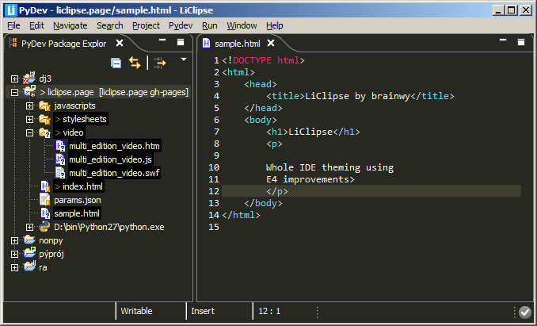

Lightweight editors, theming and usability improvements for Eclipse
Copyright 2013-2015 - Brainwy Software Ltda.
Hosted on GitHub Pages - Theme by orderedlist
With it, users get out of the box:

View highlights for previous releases
Supported languages feature syntax highlighting, template completion, outline, select/deselect scope, comment/uncomment, auto-indent, linked edition, multi-edition, mark occurrences, among others.
As a note, some editors have improved support:
The HTML editor has advanced context-based code-completion
The HTML, XML and JavaScript editors have code-analysis and code-formatting features
At this point, the major improvement is multi-edition and vertical indent guides, supporting all editors (such as PyDev, JDT, etc).
See: Multi-Edition Video for details
Besides the multi-edition (which can be triggered in a Ctrl+K search or with the mouse with Ctrl+Alt+Mouse Click), the rectangular edit is also improved to be triggered with Alt+Click (and stopped with escape).
Eclipse has a myriad of useful plugins, and LiClipse bundles some which are considered to be useful regardless of which language you're dealing with: Eclipse Color Theme, StartExplorer, AnyEdit and PyDev (note that PyDev does not follow the rule of being useful for everyone as the other plugins, but LiClipse itself reuses parts of the PyDev codebase).